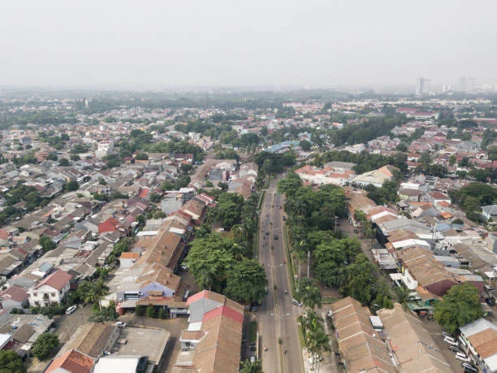

Jasa Sedot WC & Solusi Sanitasi di Kota Tangerang
Melayani rumah tinggal, perumahan, kos, kontrakan, ruko, kantor, restoran, dan tempat usaha di wilayah Kota Tangerang.
Layanan Sanitasi yang Tersedia di Kota Tangerang

NARAYA Sanitasi Solution melayani kebutuhan sedot WC dan solusi sanitasi untuk rumah tinggal, perumahan, kos, kontrakan, ruko, kantor, restoran, serta tempat usaha di wilayah Kota Tangerang. Kondisi lokasi di Kota Tangerang cukup beragam — pelanggan dapat berada di lingkungan perumahan, kawasan permukiman, kompleks, jalan lingkungan, maupun area usaha. Untuk membantu proses konfirmasi, kirimkan alamat lengkap, patokan lokasi, kondisi WC atau septic tank, dan informasi akses kendaraan melalui WhatsApp.
Sedot WC Kota Tangerang
Layanan penyedotan WC dapat dikonsultasikan ketika septic tank sudah penuh, sistem pembuangan mulai terganggu, atau Anda membutuhkan pengurasan septic tank secara berkala. Layanan ini dapat digunakan untuk rumah tinggal, kos, kontrakan, ruko, kantor, maupun tempat usaha di Kota Tangerang.
Sedot Septic Tank
Septic tank yang penuh dapat menyebabkan sistem pembuangan tidak berjalan dengan baik. Penyedotan septic tank dilakukan dengan mempertimbangkan kondisi titik septic tank dan akses kendaraan menuju lokasi Anda.
WC Mampet
WC mampet dapat mengganggu aktivitas rumah maupun kegiatan usaha. Informasi mengenai kondisi WC, kapan mulai mampet, dan apakah air masih dapat mengalir akan membantu proses konfirmasi sebelum penanganan.
Septic Tank Penuh
Septic tank penuh dapat ditandai dengan saluran pembuangan yang mulai lambat, air sulit turun, bau tidak sedap, atau gangguan lain pada sistem pembuangan. Jika kondisi tersebut terjadi, Anda dapat menghubungi NARAYA dan menyampaikan kondisi lokasi untuk dikonsultasikan.
Penyedotan Limbah Cair Domestik
NARAYA juga melayani kebutuhan penyedotan limbah cair domestik sesuai jenis dan kondisi yang dapat ditangani. Sebelum pemesanan, sebaiknya jelaskan sumber limbah, lokasi, kondisi akses, serta kebutuhan penyedotan agar dapat dilakukan konfirmasi terlebih dahulu.
Area Pelayanan Kota Tangerang
NARAYA melayani berbagai wilayah Kota Tangerang, antara lain:
- Batuceper
- Benda
- Cibodas
- Ciledug
- Cipondoh
- Jatiuwung
- Karang Tengah
- Karawaci
- Larangan
- Neglasari
- Periuk
- Pinang
- Tangerang
Kebutuhan sedot WC dapat berbeda berdasarkan penggunaan properti. Rumah tinggal biasanya memiliki pola penggunaan toilet yang berbeda dengan kos, kontrakan, restoran, kafe, kantor, maupun ruko. Jika septic tank sudah penuh atau sistem pembuangan mengalami gangguan, Anda dapat menghubungi NARAYA untuk melakukan konfirmasi kebutuhan.
Sedot WC di Cipondoh
Pelanggan di Cipondoh dapat menghubungi NARAYA untuk kebutuhan sedot WC, septic tank penuh, WC mampet, dan penyedotan limbah cair domestik yang sesuai layanan. Alamat lengkap dan kondisi akses kendaraan dapat dikirimkan melalui WhatsApp.
Sedot WC di Ciledug dan Larangan
Kebutuhan sanitasi di Ciledug dan Larangan dapat berasal dari rumah, perumahan, kos, kontrakan, ruko, maupun tempat usaha. Pelanggan dapat menjelaskan masalah sanitasi dan memberikan informasi lokasi untuk melakukan konfirmasi.
Sedot WC di Karawaci dan Cibodas
Karawaci dan Cibodas memiliki berbagai kawasan hunian dan kegiatan usaha. NARAYA melayani konsultasi kebutuhan sedot WC dan septic tank sesuai kondisi lokasi. Jika akses menuju septic tank terbatas, informasi tersebut sebaiknya disampaikan sejak awal.
Sedot WC di Jatiuwung dan Periuk
Untuk wilayah Jatiuwung dan Periuk, pelanggan dapat memberikan alamat lengkap, patokan, serta kondisi akses kendaraan. Jika lokasi berada di kompleks atau jalan lingkungan, informasi tersebut membantu proses konfirmasi sebelum pekerjaan.
Sedot WC di Batuceper dan Benda
Pelanggan di Batuceper dan Benda dapat menghubungi NARAYA untuk kebutuhan sedot WC, septic tank penuh, WC mampet, maupun kebutuhan penyedotan limbah cair domestik yang sesuai layanan.
Sedot WC di Pinang dan Karang Tengah
Rumah tinggal, perumahan, kos, kontrakan, dan tempat usaha di Pinang maupun Karang Tengah dapat memiliki kebutuhan sanitasi yang berbeda. Sampaikan jenis properti dan kondisi masalah saat melakukan pemesanan.
Sedot WC di Kecamatan Tangerang dan Neglasari
Pelanggan di Kecamatan Tangerang dan Neglasari dapat mengirimkan alamat serta kondisi sanitasi melalui WhatsApp. Untuk lokasi dengan akses jalan sempit, informasi mengenai kondisi jalan dan akses kendaraan perlu disampaikan terlebih dahulu.
Rumah, Kos, Ruko, Kantor, dan Tempat Usaha
Layanan sanitasi tidak hanya dibutuhkan oleh rumah tinggal. Kos dan kontrakan dengan jumlah penghuni yang cukup banyak dapat mengalami penggunaan toilet yang lebih tinggi. Tempat usaha seperti restoran, kafe, kantor, dan ruko juga memiliki kebutuhan sanitasi yang perlu diperhatikan.
Jika septic tank sudah penuh atau terjadi gangguan pada sistem pembuangan, Anda dapat menghubungi NARAYA untuk melakukan konsultasi awal.
Akses Jalan dan Kondisi Lokasi
Sebelum memesan, siapkan informasi berikut agar proses konfirmasi lebih cepat:
- Alamat lengkap
- Patokan lokasi
- Nama kompleks/perumahan
- Nomor rumah
- Kondisi jalan
- Akses kendaraan
- Posisi septic tank
- Kondisi WC
- Jenis properti
Foto atau video kondisi lokasi juga dapat dikirimkan apabila diperlukan untuk membantu proses konfirmasi.
Cara Memesan
- Kirim alamat.
- Jelaskan masalah.
- Informasikan kondisi akses.
- Kirim foto/video jika diperlukan.
- Tunggu konfirmasi tim NARAYA.
Pertanyaan Umum — Kota Tangerang
Apakah NARAYA melayani sedot WC di Kota Tangerang?
Ya, NARAYA melayani kebutuhan sedot WC dan solusi sanitasi di berbagai wilayah Kota Tangerang sesuai kondisi dan akses lokasi.
Apakah melayani septic tank penuh?
Ya, kebutuhan septic tank penuh dapat dikonsultasikan.
Apakah melayani WC mampet?
WC mampet dapat dikonsultasikan terlebih dahulu berdasarkan kondisi masalah.
Apakah melayani limbah cair?
NARAYA melayani penyedotan limbah cair domestik sesuai jenis dan kondisi yang dapat ditangani.
Apakah bisa melayani lokasi dengan jalan sempit?
Bisa dikonsultasikan. Kirimkan informasi kondisi jalan dan akses kendaraan agar dapat dilakukan konfirmasi terlebih dahulu.